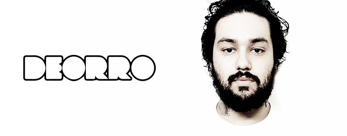

Deorro ist ein US-amerikanischer House-DJ aus Los Angeles.
Mit 14 Jahren begann er als DJ und einige Jahre später fing er an, eigene Tracks zu
produzieren. Deorro arbeitete danach mit zahlreichen bekannten Szenegrößen zusammen
wie Steve Aoki, Chuckie, Laidback Luke, Carnage, Diplo, MakJ, Tommie Sunshine, R3hab, & Alvaro.
Mit seinem Stück Yee wurde er 2013 auch in Europa bekannt. Zuerst kam er im Herbst in den
Niederlanden in die Top 40, dann trat er auch in Deutschland und Österreich in die Charts ein.
Derzeit belegt Deorro Platz 19 der DJ Mag Top 100.